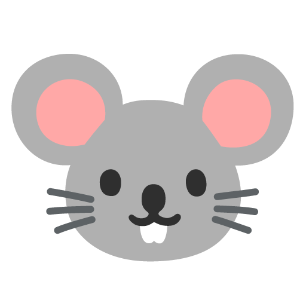

Feed me! 🐿️
Comencemos a cuidar a Koromo, selecciona alimentos saludables para él.
Puntos: 0

¡Recuerda! a Koromo le gustan las cosas "saludables". Recibes 10 puntos por cada comida "saludable". De lo contrario, pierdes 5 puntos.